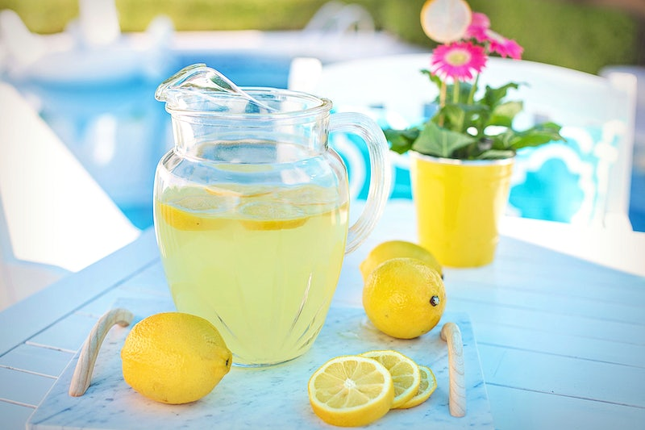
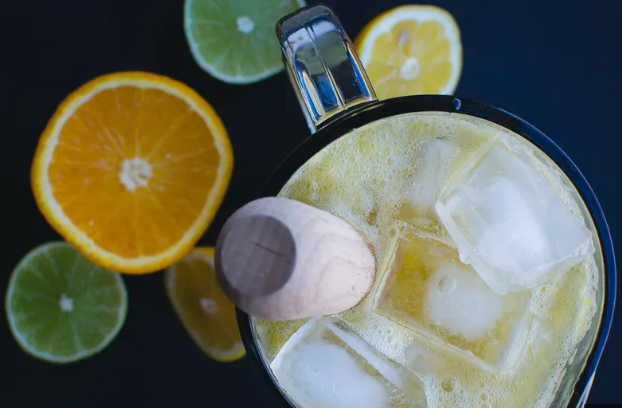

Overview
Purpose
Welcome to Virtual Lemonade stand, choose from various flavors,mix-ins and ingredients to create personalized drinks. Virtual lemonade stand offers a shopping list of ingredients and step-by-step guide for making lemonade at home, utilize clean and attractive design to enhance user experience.
Audience
Created for lovers of lemonade, people looking to try new recipes or want to experiment with different ingredients and flavors, including families, home chefs.
Branding
Website Logo
Style Guide
Color Palette
Palette URL: https://coolors.co/8ecae6-219ebc-023047-ffb703-fb8500| Primary | Secondary | Accent 1 | Accent 2 |
|---|---|---|---|
| #8ecae6 | #219ebc | #023047 | #ffb703 |
Typography
Heading Font: Roboto Slab
Paragraph Font: Merriweather
Normal paragraph example
We believe that our virtual lemonade website offers a complete experience for anyone looking to try new lemonade recipes, experiment with different flavors, or just appreciate the beauty of this classic beverage..
Colored paragraph example
Our virtual lemonade website offers several unique benefits that set us apart from other lemonade websites.
Navigation
Site Map
Home page
Are you tired of drinking the same old lemonade? Look no further, Virtual Lemonade Stand is here to offer you a unique and personalized experience. Choose from a variety of flavors, mix-ins, and ingredients to create your very own lemonade masterpiece.At Virtual Lemonade Stand, we understand the importance of having access to fresh and quality ingredients. That's why we provide a shopping list of ingredients for you to purchase at your convenience. No more searching for hard-to-find ingredients, just follow our shopping list and you'll have everything you need to make your lemonade.
Our step-by-step guide makes it easy for you to make your lemonade at home. From choosing your ingredients to mixing and serving, we'll be there every step of the way. We've also made sure to include tips and tricks to ensure that your lemonade turns out perfectly every time
At Virtual Lemonade Stand, we believe that presentation is key. That's why we've designed our website with a clean and attractive look, to enhance your user experience. From the moment you log on, you'll feel like you're in a lemonade stand, ready to make your own creation. So, what are you waiting for? Start mixing and creating your personalized lemonade today! We can't wait to see what you come up with.
Images for the Home page
 Ingredients
[Written copy for the Page 2 here]
Contacts Us
Contact Us
Thank you for visiting our website! We are always here to help and answer any questions you may have. If you have any feedback, suggestions, or concerns, please feel free to reach out to us using the contact information below.
Email: fxmaxony@gmail.com
Phone: +2348151121782
Address: No. 25 Oba Erediawa Benin City, Nigeria.
Images for the Page 3
Wireframes
Home
Ingredients
Contacts Us